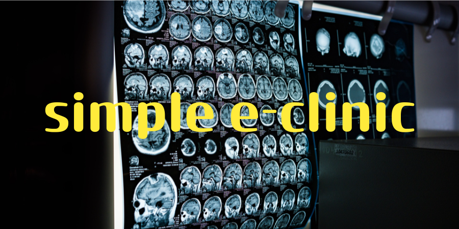

Numer telefonu:
Phone number
Numer telefonu:
Phone number
 Email:
Email:
 Data urodzenia:
Date of birth:
1985-06-17
Data urodzenia:
Date of birth:
1985-06-17
 Miejsce zamieszkania:
Residence:
Wrocław
Miejsce zamieszkania:
Residence:
Wrocław
O mnie
About me
Jestem ambitnym i pełnym pasji adeptem programowania, który od ponad roku intensywnie uczy się języka Java. W trakcie mojej nauki miałem okazję przerobić kilka obszernych warsztatów na temat m.in: Gradle/Maven, Lombok, PSQL, Hibernate, Mockito, Git, Spring, Spring Boot, Rest API, co pozwoliło mi zdobyć solidne podstawy w tworzeniu oprogramowania.
Najwięcej do mojej nauki wniósł własny projekt. Dzięki, któremu mogłem przekonać się na własnej skórze znaczenia jaki ma czysty i skalowalny kod oraz o jego wpływie na skuteczność rozwiązywania problemów za pomocą programowania. Dlatego też stale dążę do doskonalenia moich umiejętności, ucząc się nowych technologii i praktyk przy poprawianiu mojej aplikacji i rozwiązywaniu zadań z platform internetowych.
Jednym z moich najważniejszych atutów jest determinacja i zdolność do szybkiej adaptacji. Uważam, że programowanie to nie tylko rozwiązywanie problemów, ale także tworzenie innowacyjnych rozwiązań i projektów. Chociaż droga do osiągnięcia sukcesu w tej dziedzinie bywa wyboista, jestem zdeterminowany, aby wykorzystać moje umiejętności i pasję do programowania w przyszłej karierze zawodowej.
Obecnie wciąż pracuję nad simple-clinic, ale jedocześnie rozglądam się za jakimś projektem grupowym, żeby nauczyć się pracy zespołowej z innymi programistami. Planuję kontynuować rozwijanie moich umiejętności, a także eksplorować różne obszary programowania, takie jak cyberbsecurity i web development. Moim celem jest stać się profesjonalnym programistą i tworzyć oprogramowanie, które ma wpływ na świat.
Doświadczenie zawodowe
Experience
- 2012-2022 Polonit Sales sp. z o.o.
- 2007-2012 RBK sp. z o.o.
Języki
Languages
- Polski - ojczysty
- Angielski - B1
- Ukraiński - A2
GitHub
-
Mój profil na GitHub

-
Obecnie pracuję nad

Wykształcenie
Education
- 2004-2006: Uniwersytet Opolski - Historia (zaocznie)
-
2000-2004:
Zespół Szkół Mechanicznych w Głubczycach
- Liceum Zawodowe o specjalizacji
mechaik pojazdów samochodowych
Zainteresowania
Hobbies
-
Sport
Sport pełni ważną rolę w moim życiu i kształtuje charakter. Ruch to zdrowie i endorfiny:)
-
Programowanie
Nauka prgramowania pozwala mi zagubić się w czasie i przestrzeni. Są takie miesiące, że nie wychodzę z piwnicy.
-
Szachy
Przesuwanie drewnianych figurek po kawałku drewna może przynieść bardzo dużo emocji i satysfakcji, a stary żart o refleksie szachisty w zestawieniu z szachami szybkimi ma się nijak.
-
Fizyka kwantowa
Tak na prawdę nie mam o tym pojęcia, napisałem tak żeby lepiej wyglądało w CV.
Wyrażam zgodę na przetwarzanie moich danych osobowych w celu prowadzenia rekrutacji na aplikowane przeze mnie stanowisko.